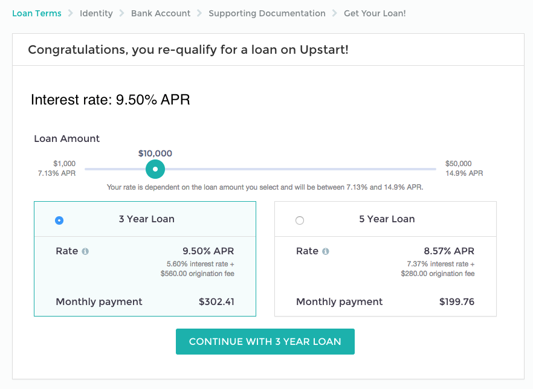
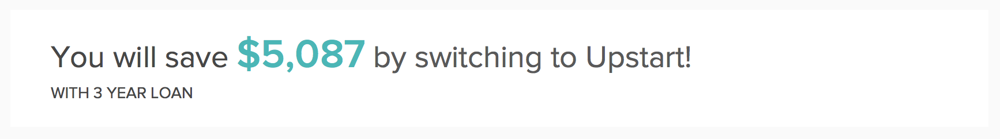
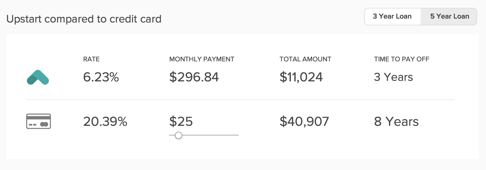

Case Study
Upstart: Design Challenge
Interface Design
Background
This is a “design challenge” that I completed as part of a job interview with Upstart, a personal loan startup that offers lower interest rates by taking into consideration data such as college education and job history.
Challenge Prompt
One of the most important pages in our user flow is the “Got Rate” page. This is the page that comes after the application form, where we tell a user that he or she has qualified for our loan and the interest rate he or she has qualified for. This is the most important conversion point in our flow, since users decide whether they want to move forward with the loan or not.
We would like to add some persuasive content to this page to encourage users to accept our loan. One idea is to tell users how much money they would save by refinancing their loan with Upstart.
However, there‘s no fixed credit card payoff time on a credit card. While an Upstart loan is always paid off in 36 equal monthly payments, credit cards have small minimum payments that could leave someone in debt for many years. Of course, a user could choose to pay off their credit cards much faster. This makes it hard to say in a straightforward way how much money someone would save by switching from their credit card to an Upstart loan.
Instructions
Based on what you know, create a mockup of how you think this page should look. The mockup doesn’t need to include any features outside of the following information:
- The user’s credit card interest rate.
- The total amount the user would pay on their credit card debt if they just made minimum monthly payments.
- The total amount the user would pay on their credit card debt if they paid exactly each month the amount of their Upstart loan’s monthly payment
- The total amount the user would pay on their credit card debt if they paid $___ per month.
In addition, describe how you would start/approach this project if you were a full-time product designer at Upstart.
Addressing the Challenge
The first thing I did was clearly define the problem to be solved, as well as the goal and intended outcome.
- Problem : Many users are not moving forward with Upstart’s loan offer when they get to the “get rate” page.
- Goal : Demonstrate the advantage of Upstart and convince users to move forward with the loan.
- Intended Outcome : Increase the number of users who choose to move forward and accept the loan from Upstart.
I examined Upstart’s existing “get rate” page and made observations about what might be preventing users from moving forward.
I identified two primary issues about the existing page:
- There is no indication of how much money a user would save by using Upstart.
- There is no comparison of a user’s current credit card rate to the rate that Upstart offers.
To solve the first problem that I identified (not knowing how much money a user would save), I made this the very first thing the user sees.
To solve the second problem (not knowing how Upstart’s interest rate compares to a user’s credit card’s interest rate), I included a simple two-row comparison between Upstart’s rate vs. the rate of a credit card.
One of the challenges noted in the prompt was that credit cards don’t have fixed monthly repayment schedules — users can pay as much or as little as they want each month, whereas Upstart has a fixed 36-month repayment schedule. I addressed this problem by adding a slider below the monthly payment amount in the credit card row so users could adjust it to the amount they pay each month. In my proposed redesign, the numbers, including how much the user would save, would dynamically update as the user moves the slider.
The final change I made was to get rid of the adjustable loan amount slider, which took up a lot of real estate in the original design. In my proposed re-design, the user can still adjust the loan amount, but it’s less prominent. I made this decision under the assumption that the amount the user entered upon signing up was likely to be amount they needed. This assumption would need to be validated with user testing and data.

{kind=link}
In response to the second part of the design challenge, I outlined the process I would have used if I were a full-time employee (in response to the second part of the challenge) here.
- Making financial data easy for users to understand is challenging!
- It’s difficult to design (or in this case, re-design) without having any sense as to why users are behaving in a particular way. Without talking to users, doing user testing, or analyzing existing data, there is little to guide design decisions.
- Talk to users! Try to understand their frame of mind. What factors did they consider when making a decision on the “got rate” page?
- Work with a cross-functional team. Designing in a vacuum rarely results in the best possible design outcome.
- Make a prototype and do user testing, then iterate based on user feedback.
- Design with real data! This helps ensure that designs reflect what the designer intends, and work the way they expect them to.